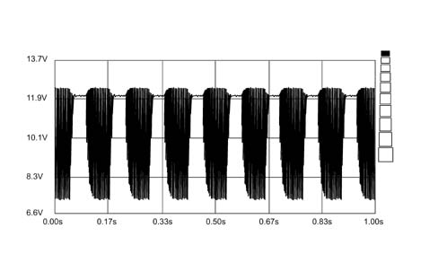
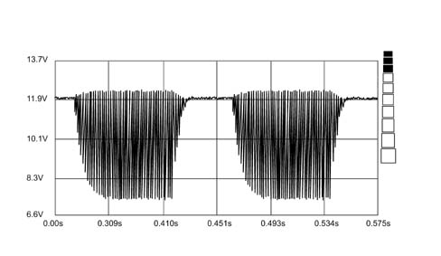
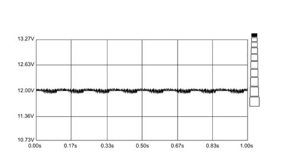
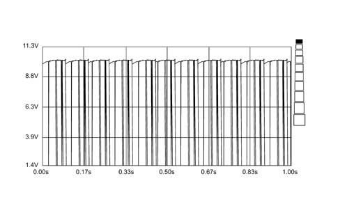

5580HB PARKING SENSOR SYSTEM OPERATION CHECK
- Path
- Test > 55 ELECTRICAL EQUIPMENT > 5580 SPECIAL ACCESSORIES > 5580H PARKING OBSTACLE DETECTION DEVICE > 5580HB PARKING SENSOR SYSTEM OPERATION CHECK
- Kind
- test / check procedure
- Applies to
- all engines; all production periods
- Interactive page
- https://sloeber94.github.io/elrnDB-fUlss/en/#/179006803
Applies to: all engines; all production periods
Foreword.
After having connected at least the Examiner supply terminal to the vehicle earth and after having switched it on, enter the ohmmeter ambient and carry out the calibration. Connect the leads (black and red) to the buzzer terminals without disconnecting it from the volumetric parking sensor system.
A reading of around 51 ohm indicates the buzzer impedance value. When the buzzer is disconnected the reading should be around 230 Kohm which is the impedance from the buzzer activation system.
The readings are subject to a tolerance of about 25%
With the key in the ON position and reverse gear engaged, enter the voltmeter ambient on the Examiner and connect the lead (black) for the multimeter to the vehicle chassis. Using the red voltmeter probe, check that the following are present at the junction unit terminal board:
- la corretta alimentazione prima positiva e poi negativa
- l'abilitazione traino carrello ove presente.
Connect the voltmeter lead (red probe) to one end of the two buzzer supply wires (orange/white or light blue/black wire) and check that the voltage at both wires connected to the buzzer is around 12 Volt (battery voltage).
With the ignition switched on and reverse gear engaged, select an end of scale of 20 volt and 1 second on the Examiner, connect the voltmeter red probe to the white/orange wire, get close to the rear sensors, with the device working and check that there is an electrical signal. Press the start button on the Examiner. The figures that appear are subject to a tolerance of around 20%. It should be similar to the following image.

For a better display, highlight a single impulse using the zoom which will be similar to the following image.

The supply values for the ultrasound sensors fitted on the rear bumper can be checked by connecting the red voltmeter probe to pin 6 of the connector where the reading should be 0 volt whilst at pin 4 it should be 12 volt. Select a 20 volt and 1 second end of scale on the Examiner, then press the start button. The figures that appear are subject to a tolerance of around 20%. It should be similar to the following image.

In the image above the dotted red line is caused by the activation of a sensor
Position the voltmeter red probe alternately at the electrical signal output leads for the various sensors. With the values selected previously, press the start button on the Examiner. The figures that appear are subject to a tolerance of around 20%. It should be similar to the following image.

The electrical signal sent to the control unit, by the sensors, unlike the above image, indicates that the individual sensor is not working properly or there is a control unit input defect.